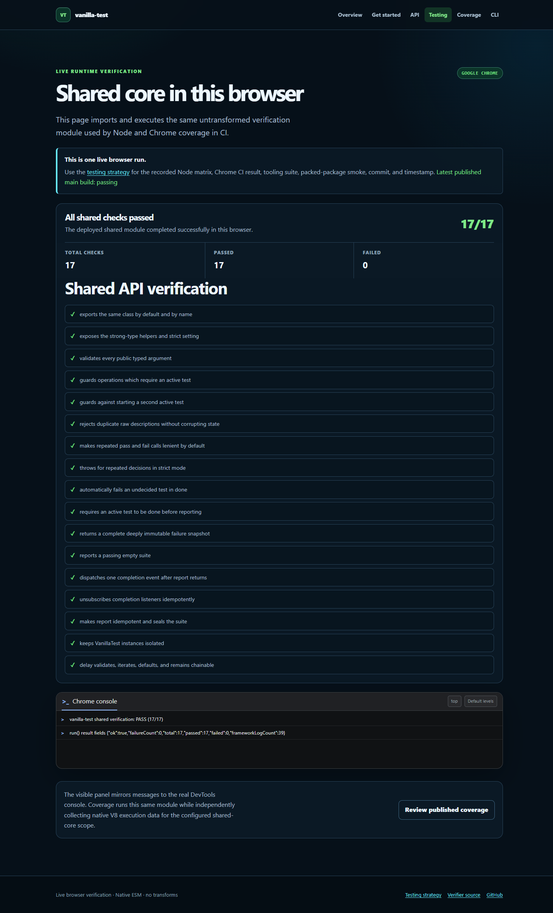
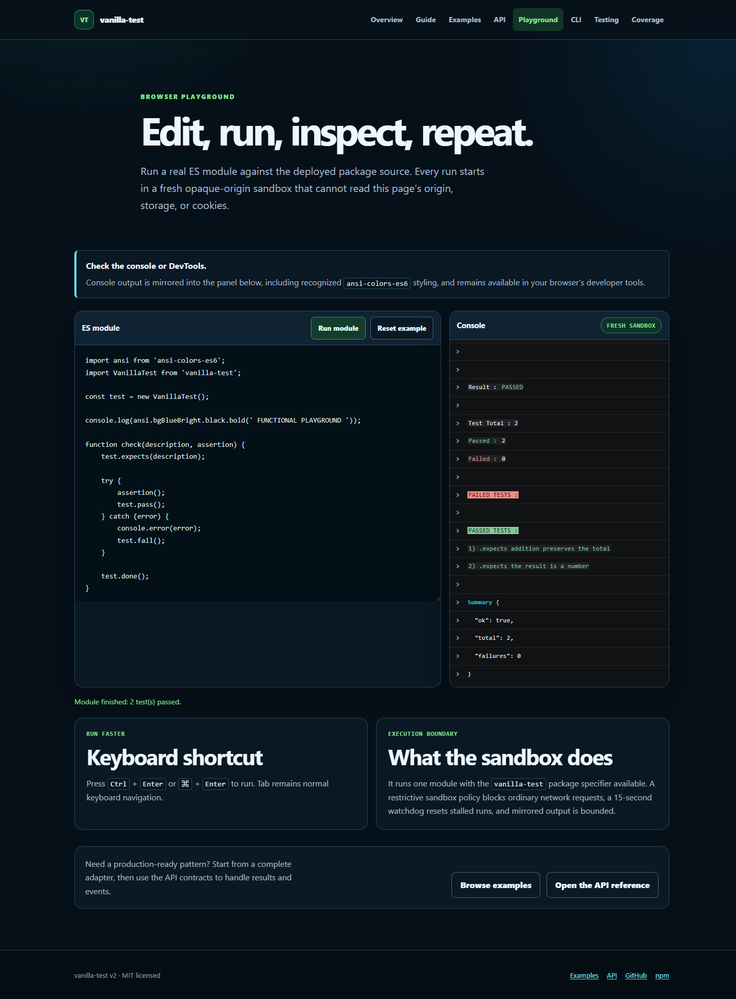
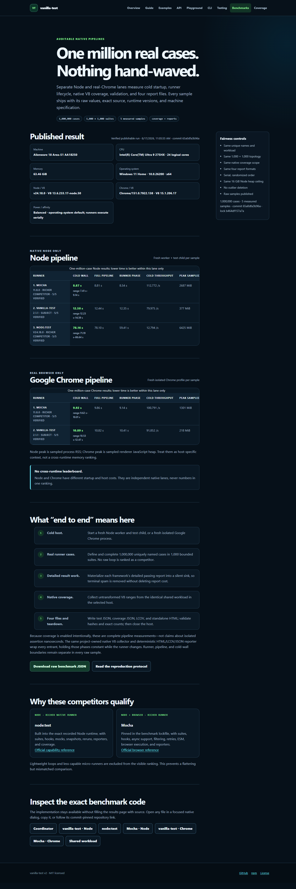
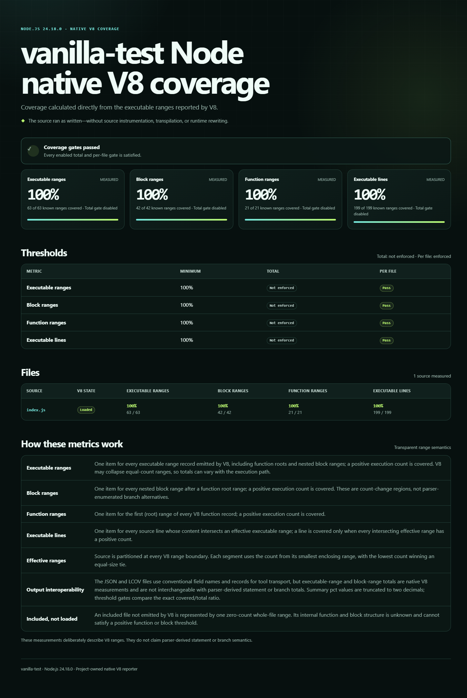
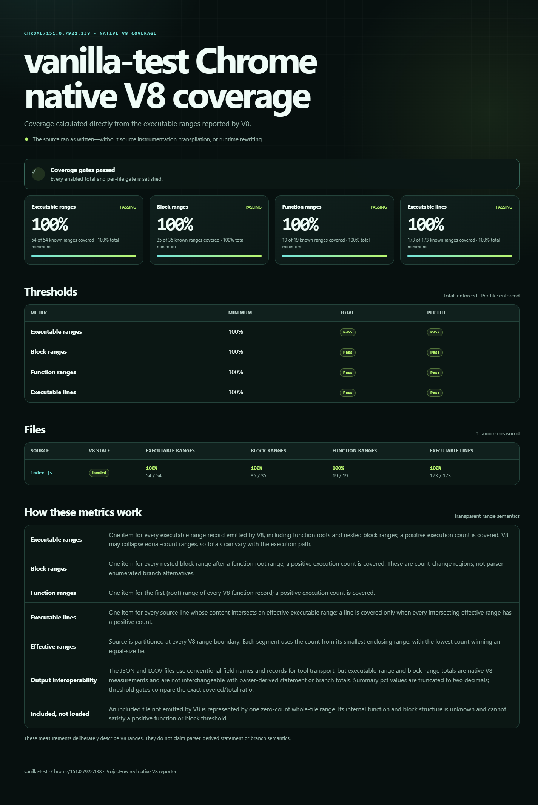

Latest published metrics
Loading verified status… · latest successful main build · main
| Metric | Required | Node percent | Node covered | Chrome percent | Chrome covered |
|---|---|---|---|---|---|
Executable ranges (statements) | configured gate | — | — | — | — |
Block ranges (branches) | configured gate | — | — | — | — |
Function ranges (functions) | configured gate | — | — | — | — |
Executable lines (lines) | configured gate | — | — | — | — |
Both collectors use the same project-owned range analyzer, but V8 may emit or collapse ranges differently along each execution path. Compare each runtime with its own threshold; these are native execution-range measurements, not parser-derived statement or branch counts.
Measured scope
The repository config includes only index.js for both collectors. The published percentage therefore means complete execution of the shipped Web-standard core—not complete execution of every Node-only coverage helper.
{
"node": { "include": ["index.js"] },
"chrome": { "include": ["index.js"] }
}- Included files that are never loaded count as zero coverage.
- Node applies every configured threshold to each included file.
- Chrome applies every configured threshold to both the aggregate total and each included file.
- Unloaded files cannot satisfy a positive function or block gate because their internal V8 structure is unknown.
- Assertion failure and coverage failure both produce exit status
1. - Harness or configuration failure produces exit status
2.
Node-only coverage tooling is verified separately by integration, invalid-input, timeout, leaked-handle, and path-safety tests. See the testing strategy for that boundary.
How each collector works
Built-in V8 coverage
The CLI launches the test entry with Node's NODE_V8_COVERAGE output enabled, merges repeated script records, and applies per-file gates to the configured include scope.
Precise coverage in real Chrome
A project-owned DevTools pipe launches installed Google Chrome Stable, starts precise V8 coverage, forwards console output, runs the shared harness, and captures a diagnostic screenshot.
No third-party coverage engine, browser automation framework, source rewrite, browser shim, bundle, or transpiler is inserted before either runtime executes the module.
Report artifacts
| Artifact | Use |
|---|---|
index.html | Standalone project-owned native V8 report. |
lcov.info | Interchange with editors and coverage consumers. |
coverage-summary.json | Machine-readable covered, total, and percentage values. |
test-results.json | Normalized, ANSI-free suite outcome for the selected runtime. |
.vanilla-test-coverage.json | Ownership marker used for safe atomic report replacement. |
vanilla-test-chrome.png | Successful Chrome harness screenshot in the Chrome report. |
data/status.json | Normalized package, runtime, test, coverage, commit, and timestamp provenance for this documentation site. |
CI retains downloadable coverage artifacts and publishes the successful main-build reports here. A failed current build is still visible through the repository's CI status; a previous Pages deployment should not be interpreted without its displayed commit.
Current test and report screenshots
These PNGs are regenerated by the same CI run that builds the native reports. Open any image to inspect it at full size.
{kind=link}

{kind=link}

{kind=link}

{kind=link}

{kind=link}

Run the same gates locally
npm run coverage
# collectors can also run independently
npm run coverage:node
npm run coverage:chromeThe suite report and any collector errors appear there. Open the generated runtime directory for the coverage metrics and HTML report.
Use configuration to choose the entry, include scope, threshold, report directory, browser imports, Chrome executable, and timeout.
Read the CLI contractSee the same native collectors and HTML/LCOV/JSON writes measured inside the one-million-case Node and real-Chrome end-to-end benchmark.
Open native pipeline benchmarks